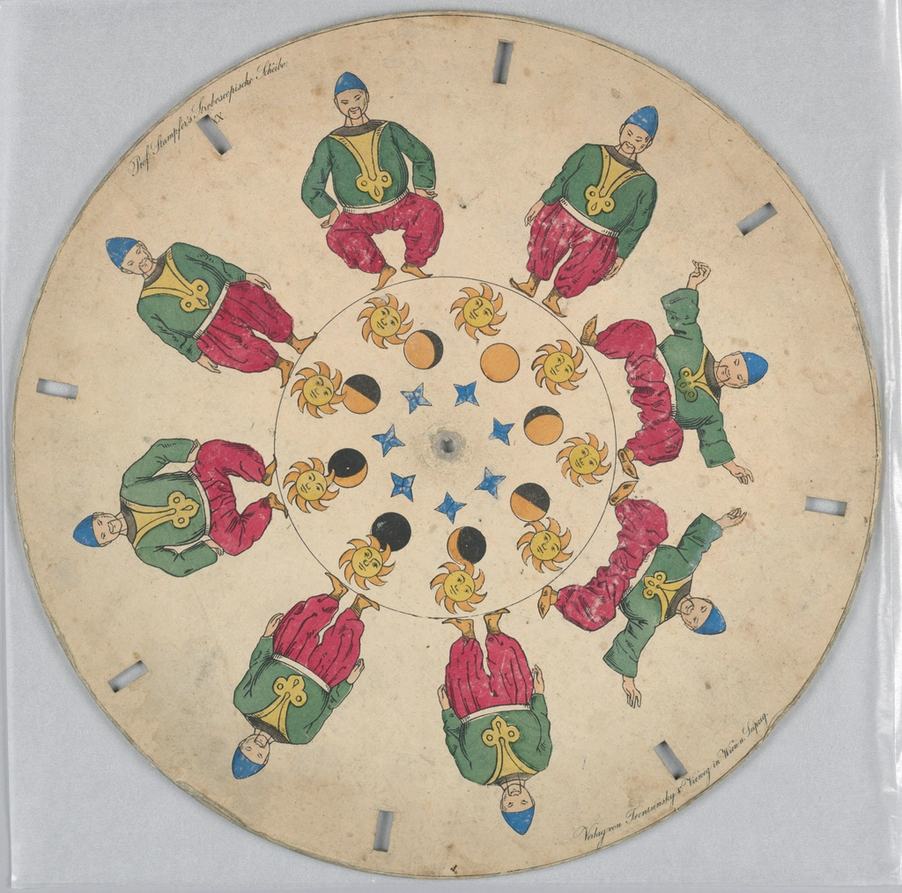
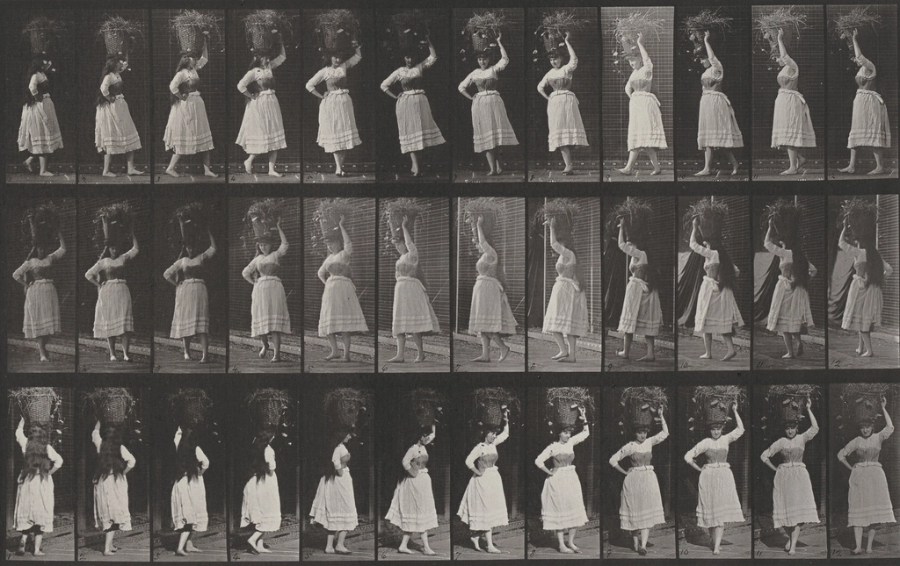
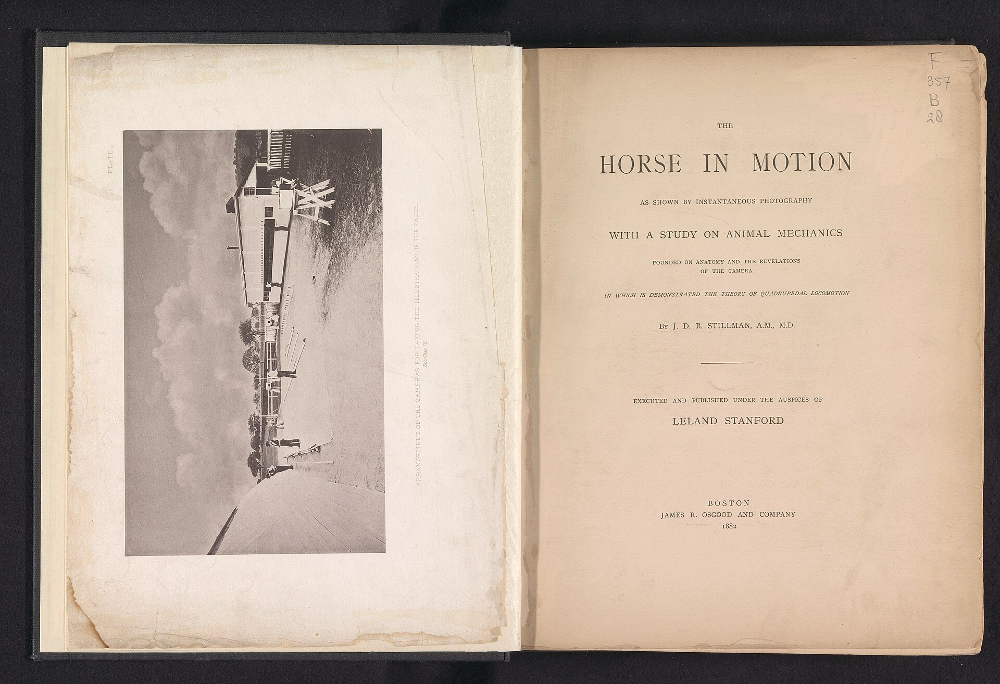
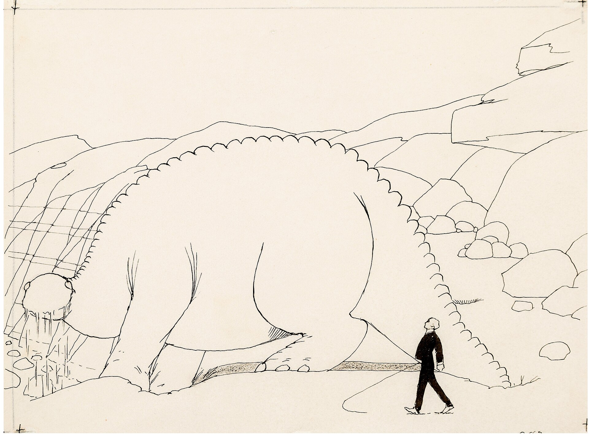

Your animations 6
From two drawings to a clip
Put down the first and the last drawing.
Two images, shown at 8:5. Order is spatial: start on the left, end on the right, and you can swap them.
Then say the order in English.
Cue turns the sentence into a cue sheet you can read before anything is generated, or tells you why it can't.
Approve the plan. Cue draws the rest.
Sixteen frames, with your two drawings as the first and the last. You watch it step by step and export an MP4.
Both drawings readyContinue to motion
“First move the eyes to the left, then slowly turn the head, and begin smiling near the end.”
Plan approved · 3 stepsGenerate animation
Done · 16 framesDownload MP4
Pieces of the studio
Turn the head to the right and smile.
Cue couldn't turn this into a plan. The end drawing faces left, so a turn to the right can't reach it.Try: “First move the eyes to the left, then turn the head.”
Eyes, then head, then smileRunning
- Instruction
- First move the eyes to the left, then slowly turn the head…
- Plan
- 3 steps · gaze, head, expression
- Model
- cue-ib 0.1-dev
- Seed
- 48213
- Generation
- 3 min 42 s
- File
- 512 × 320 · 16 frames · 184 KB
End drawing
sketch.heic isn't a PNG or JPEG.
Export it as PNG and drop it here again.
The library
Every animation you made, newest first, with its status in a word. Running jobs keep updating after you leave.
Inbetweening, since 1833
A disc of in-between poses
Phenakistiscope discs, from the 1830s, put twelve drawings round a wheel. Spun behind slits, the in-between poses became one movement.


One motion, recorded under control
Muybridge's plates from 1887 photographed one movement at a time against a fixed backdrop. Cue's dataset plans the same thing: short controlled recordings, then a drawing for every frame.
Motion as a study
Stanford's 1882 book printed the horse's gait frame by frame to settle how it really moves. Measuring motion is older than the cinema.

Drawn line by line
Émile Cohl's Fantasmagorie, 1908, is chalk-white lines on black, each frame a new drawing. Cue's frames are line drawings for the same reason: the line is the character.
Every frame by hand
Winsor McCay drew Gertie the Dinosaur himself, frame after frame, in 1914. The in-between work is still the slowest part of drawn animation.

Now, with a sentence
Two drawings fix the ends; they don't fix the order. One sentence says what moves first, and the plan is shown to you before a frame is made.
Where the research stands
Cue is a ten-week university design project. The studio on this page is a mockup: the drawings are drawn in code and no frame here comes from a model.
| Week | Work | State |
|---|---|---|
| 1 | Requirements, architecture, AI pipeline | Reviewed |
| 2 | Mockups, database design, capture protocol | This page |
| 3 | Pilot dataset, held-out split, first baseline | Next |
| 4–6 | API, database, model service, 2–3 experiments | Planned |
| 7 | End-to-end: drawings and a sentence in, frames out | Planned |
| 8–10 | Deployment, tests, held-out evaluation | Planned |
- Clips, long-term target
- ~1,000
- Seconds per clip
- ~10
- Frames sampled per second
- ~15
- Real ↔ drawing frame pairs, at most
- 150,000
A dataset that starts small
A pilot comes first. Splits are made by video and by person, so no one's frames sit in both training and test. Adjacent frames are close to identical; 150,000 pairs are not 150,000 independent samples.